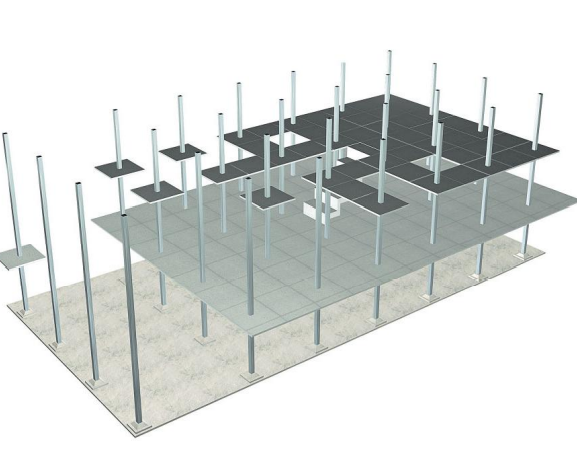

|
КУБ-2.5 – универсальная конструктивная система сборного безригельного каркаса, состоящая из
вертикальных колонн и плоских панелей перекрытия. |
 |
Система состоит из четырех основных форм – колонна и плиты надколонная, межколонная и
средняя.
Размер плит составляет 2,98х2,98 метра – таким образом зазор между ними составляет всего
20 мм, что дает возможность замоноличивания швов без установки опалубки.
Возможность проектирования зданий:
Свобода планировочных решений – это возможно благодаря отсутствию ригелей и
минимальному количеству вертикальных элементов каркаса.
Широкий диапазон формообразующих возможностей – от
одноэтажных до 25-ти этажных.
Возможность разнообразных решений фасадов зданий.
Любая силуэтная
композиция жилых комплексов.
Возможность применения для наружных и внутренних стен как штучных материалов
(кирпич, блоки), так и крупноразмерных элементов (панелей); возможно использование панелей наружных стен,
применяемых в жилых домах серии 101.
Возможность применения любых лестничных маршей, вентблоков, лифтовых шахт
сторонних изготовителей. Лестницы выполняются из сборных железобетонных лестничных
маршей или из сборных ступеней по косоурам в лестничных шахтах или с креплением к элементами
каркаса.